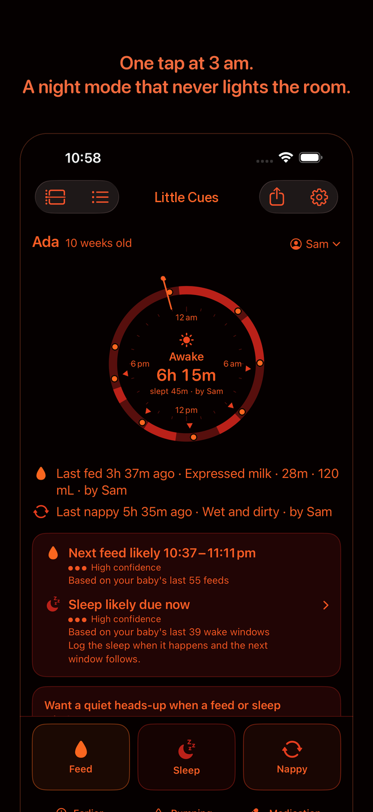
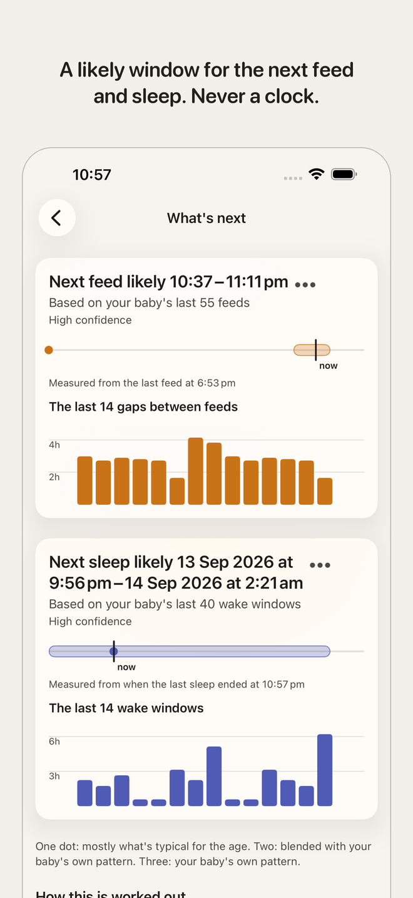

Little Cues
Feeding, sleep & nappy log
One tap at 3 am, and a likely window for the next feed and sleep. Nothing leaves your phone. For iPhone and Apple Watch.
Coming to the App Store
Free. No account, no ads, no subscription.


One tap at 3 am
Feed, Sleep and Nappy sit in the bottom third of the screen, no forms first. Timers start straight away and you add details after. Undo for ten seconds if a thumb slips. A deep-red night mode that never lights the room, on a schedule you set or with a switch.
What's likely next
Little Cues watches the gaps between your baby's own feeds and sleeps and shows the likely window for the next one. Always a window, never a clock. It says what it's based on and how sure it is, and after ten predictions you can see how often it's been right for your baby.
The counts your nurse asks for
Today's feeds, wet and dirty nappies and total sleep in a row of tiles. A 24-hour dial of the day so far, the week's rhythm at a glance, and a timeline you can scroll back through. Share a day as plain text; export everything as CSV or JSON.
Everything a feed can be
Left, right or both sides with a timer. Bottles of expressed milk or formula with the volume in mL or oz. Pumping sessions by side, time and volume. Medication with a name and a dose.
Without opening the app
Home-screen and lock-screen widgets. A live timer on the lock screen with a stop button that works without unlocking. An Apple Watch app with the three big buttons and complications. "Hey Siri, log a feed in Little Cues." Quiet notifications when a window opens, silent through the night hours you choose.
Yours alone
No account. No sign-up. No servers. No analytics, ever, and no third-party code of any kind. The App Store privacy label says "Data Not Collected" because that is exactly what happens. Works with every network switched off.
Whoever picks up the phone
Every entry shows who logged it, so a hand-over is a glance, not a conversation. Twins or more: each baby has their own record, their own timers and their own windows.
Little Cues does not do growth charts, milestones, photos, solids or sleep programs, and it never compares your baby with anyone else's. It records what you tell it and shows patterns. It is not medical advice. With any concern about your baby, contact your child health nurse, GP or emergency services.